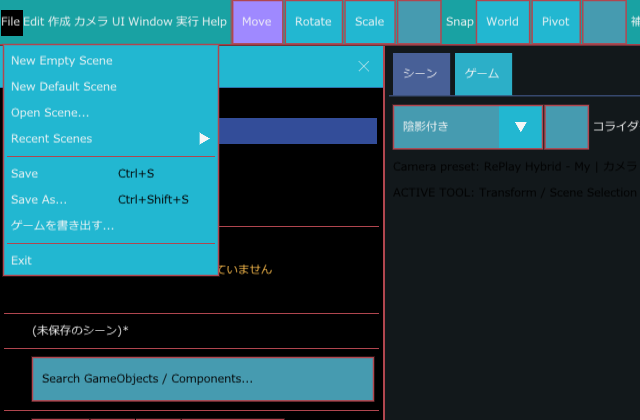
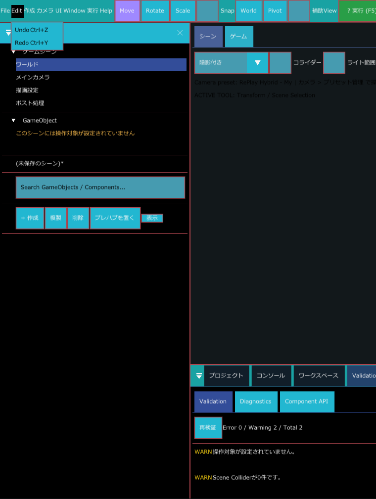
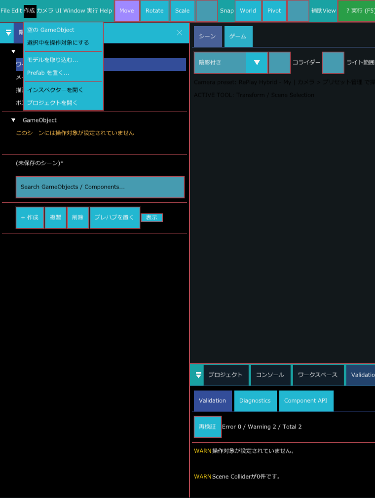
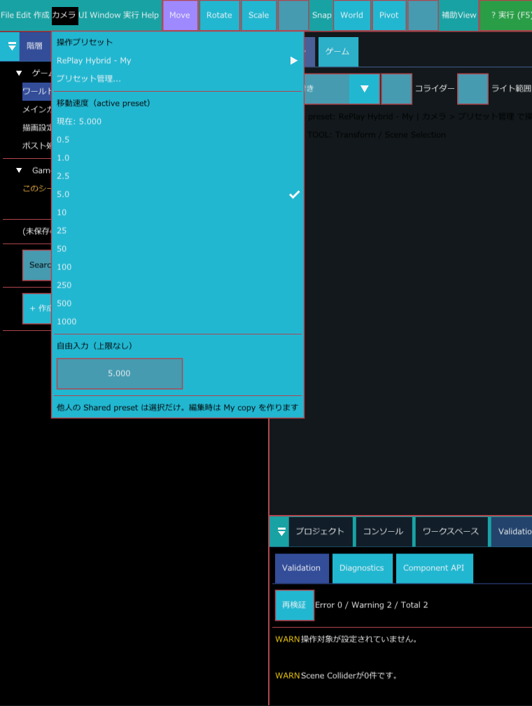
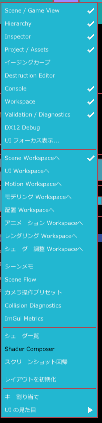
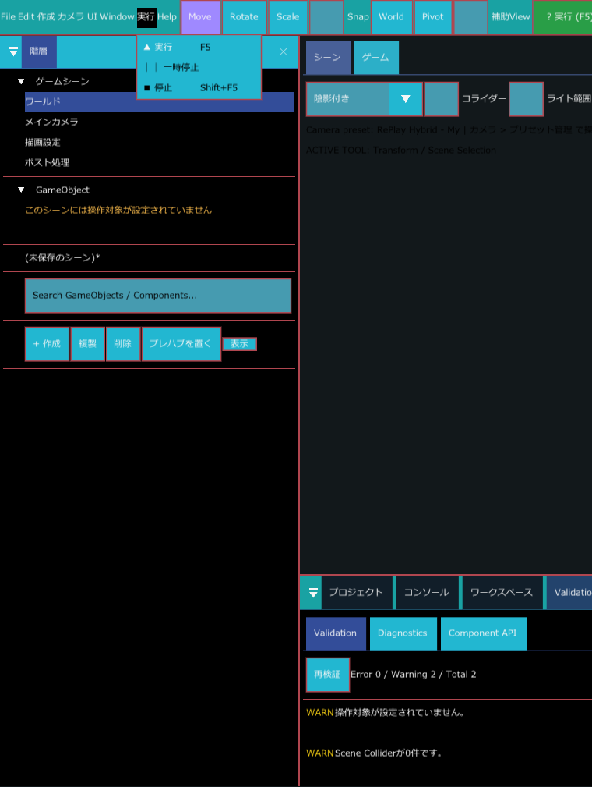
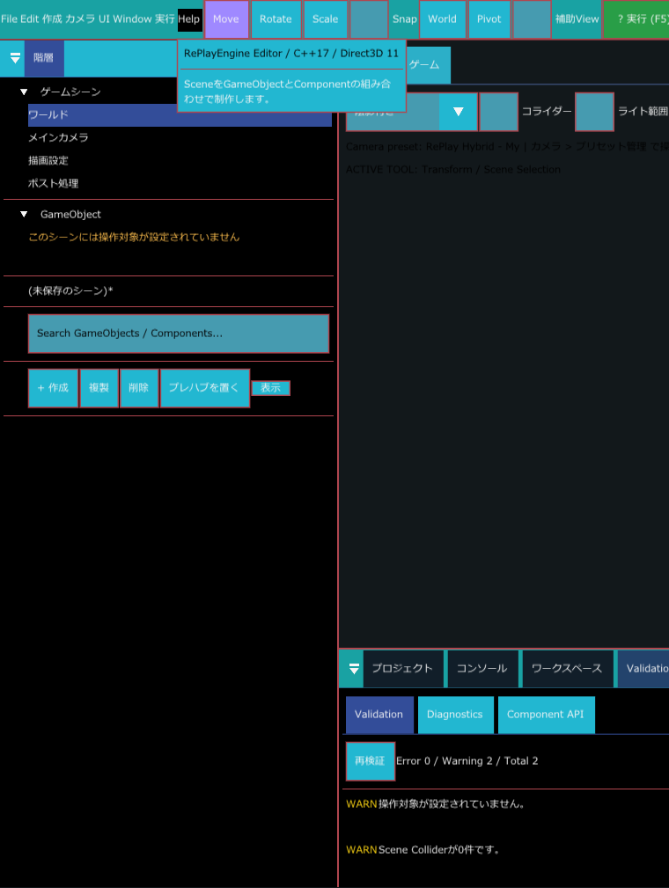

メニューバー
エディターのいちばん上にある文字のメニューです。左から File、Edit、作成、カメラ、UI、Window、実行、Help の 8 つが並びます。このページでは、それぞれのメニューに何が入っているかと、押すと何が起きるかを説明します。
こんなときに使う
- シーンを新しく作る・開く・保存するなど、ファイルの操作をしたいとき（File）
- 閉じてしまったパネルを、もう一度出したいとき（Window）
- UI やモーションを作る画面に切り替えたいとき（Window の Workspace の切り替え）
- シーンビューのカメラの移動の速さを変えたいとき（カメラ）
- 作ったゲームを、エディターなしで遊べる形にしたいとき（File > ゲームを書き出す...）
メニューの開き方
- 画面左上のメニュー名（たとえば File）をクリックします。下に項目の一覧が開きます。
- 開いたまま、となりのメニュー名にマウスを乗せると、そのメニューに切り替わります。
- 項目名の右に ▶ があるものは、マウスを乗せるとさらに右に一覧（サブメニュー）が開きます。
- メニューを閉じるには、メニューの外側をクリックします。
文字が薄く表示されている項目は、今は押せません。押せない理由は項目ごとの説明を見てください。
項目名の右に出ているキー（Ctrl+S など）は、そのショートカットです。ショートカットは Window > キー割り当て で変えられ、変えるとメニューの表示も変わります。既定の割り当てはショートカット一覧を見てください。
File

シーンを作る・開く・保存するためのメニューです。区切り線で 3 つのまとまりに分かれています。
| 項目 | ショートカット | 説明 |
|---|---|---|
| New Empty Scene | 何も入っていない新しいシーンを作ります。GameObject もライトも置かれません。 | |
| New Default Scene | 地面（Landscape の Ground）と太陽（Directional Light の Sun）が置かれた新しいシーンを作ります。プロジェクト設定で既定の操作キャラクター Prefab が設定されていれば、それも置かれます。 | |
| Open Scene... | 保存されているシーンファイル（.replayscene）を選んで開きます。 | |
| Recent Scenes ▶ | 最近開いたシーンの一覧です。ファイルが消えているシーンは名前の後ろに [Missing] が付き、押せません。履歴が無いときは「履歴はありません」と表示されます。 | |
| Save | Ctrl+S | 今のシーンを上書き保存します。まだ一度も保存していないシーンでは、保存先を選ぶ画面が開きます。拡張子を付けずに名前を入れると .replayscene が付きます。Motion Workspace でモーションを開いているときは、この項目が Save Motion に変わり、モーションを保存します。 |
| Save As... | Ctrl+Shift+S | 名前と保存先を選んでシーンを保存します。 |
| ゲームを書き出す... | エディター無しで遊べるゲームとして書き出すための画面を開きます。開いた時点で、ゲーム名には今のシーンのファイル名（未保存なら MyGame）、書き出し先には Saved フォルダ内の Build、最初に開くシーンには今のシーンが入っています。 | |
| Exit | エディターを終了します。 |
未保存の変更があるとき
今のシーンに保存していない変更があるときに New Empty Scene、New Default Scene、Recent Scenes のシーンを選ぶと、未保存のシーン という確認が出ます。「現在のシーンには未保存の変更があります。」とシーン名、「保存してから続行しますか？」が表示され、ボタンは左から次の 4 つです。
| ボタン | 押したとき |
|---|---|
| 保存して続行 | 今のシーンを保存してから、選んだ操作を続けます。 |
| 別名で保存 | 保存先を選んで今のシーンを保存してから、選んだ操作を続けます。 |
| 破棄して続行 | 今のシーンの変更を捨てて、選んだ操作を続けます。 |
| キャンセル | 何もせずに元の画面に戻ります。Esc で閉じたときも同じです。 |
エディターを終了しようとしたときも同じ確認が出ます。このときは「保存してから終了しますか？」と表示され、ボタンが 保存して終了、別名で保存、破棄して終了、キャンセル になります。保存に失敗したときは、確認を閉じずに赤い文字で「保存できませんでした」と理由が表示されるので、別名で保存するか、破棄を選んでください。詳しくはシーンを作る・開く・保存するを見てください。
Edit

| 項目 | ショートカット | 説明 |
|---|---|---|
| Undo | Ctrl+Z | 直前の操作を取り消します。 |
| Redo | Ctrl+Y | 取り消した操作をやり直します。 |
何を取り消すかは、今どこを編集しているかで自動的に決まります。ふだんはシーンの編集が対象ですが、スプライトアトラスの編集画面を操作しているときはアトラスの編集、Motion Workspace ではモーションの編集が対象になります。
作成

| 項目 | 押せる条件 | 説明 |
|---|---|---|
| 空の GameObject | 実行中でないとき | コンポーネントを何も持たない GameObject をシーンに 1 つ作り、選択します。 |
| 選択中を操作対象にする | 実行中でなく、GameObject を選択しているとき | 選択中の GameObject を、ゲームを実行したときにプレイヤーが操作する対象にします。この操作は Undo できます。 |
| モデルを取り込む... | いつでも | モデルファイルを選んで取り込みます。 |
| Prefab を置く... | いつでも | Prefab ファイルを選んで、シーンに置きます。 |
| インスペクターを開く | GameObject を選択しているとき | インスペクターパネルを表示し、選択中の GameObject の中身を出します。 |
| プロジェクトを開く | いつでも | プロジェクトパネル（アセットの一覧）を表示します。 |
操作対象がまだ決まっていないシーンでは、階層パネルの GameObject の見出しの下に「このシーンには操作対象が設定されていません」と黄色の文字で表示されます。
カメラ

シーンビューを見回すときのカメラの操作方法と、移動の速さを決めるメニューです。上から次の順に並びます。
- 操作プリセット：見出しの下に、今使っているプリセット名（画像では RePlay Hybrid - My）が ▶ 付きで表示されます。マウスを乗せると、選べるプリセットの一覧が開きます。一覧では名前の後ろに、チーム共有のものは [Shared]、自分用のものは [Personal] が付きます。
- プリセット管理...：カメラ操作プリセット ウィンドウを開き、プリセットを作ったり編集したりします。
- 移動速度（active preset）：「現在: 5.000」のように今の速さが表示され、その下に 0.5、1.0、2.5、5.0、10、25、50、100、250、500、1000 の候補が並びます。今の速さと同じ候補には ✓ が付きます。クリックするとその速さになります。
- 自由入力（上限なし）：候補に無い速さを数値で入れる欄です。0 より大きい値だけが使われます。
UI
| 項目 | 説明 |
|---|---|
| フォーカス表示管理... | UI フォーカス表示 ウィンドウを開きます。ゲーム内 UI で、今フォーカスが当たっている部品に付く枠線を表示するかどうか、その色と太さを決めます。この設定はシーンごとではなくプロジェクト設定に保存され、ゲーム全体の既定値になります。Window > UI フォーカス表示... と同じウィンドウです。 |
Window

パネルやウィンドウを出したり消したりするメニューです。区切り線で 6 つのまとまりに分かれています。項目の右に ✓ が付いているものは、今表示されているパネルです。クリックするたびに表示と非表示が切り替わります。
パネルの表示
| 項目 | 説明 |
|---|---|
| Scene / Game View | 中央のシーンビューとゲームビュー |
| Hierarchy | 左の階層パネル（シーン内の GameObject の一覧） |
| Inspector | 右のインスペクターパネル（選択中のものの中身） |
| Project / Assets | 下段のプロジェクトパネル（アセットの一覧） |
| イージングカーブ | イージングカーブを編集するパネル |
| Destruction Editor | メッシュの切断を試す・確かめる、破砕（Blast）用のアセットを作る、破壊の状態を調べるパネル（破壊） |
| Console | 下段のコンソール（ログ） |
| Workspace | 下段のワークスペースパネル |
| Validation / Diagnostics | 下段の検証と診断のパネル。シーンの問題点が WARN などで一覧されます |
| DX12 Debug | 描画（DirectX 12）の状態を確認するパネル |
| UI フォーカス表示... | UI メニューの「フォーカス表示管理...」と同じ UI フォーカス表示 ウィンドウ |
Workspace の切り替え
エディターには作業ごとの画面構成（Workspace）が 8 つあります。今いる Workspace には ✓ が付きます。各 Workspace の中身は Workspace のページを見てください。
| 項目 | 説明 |
|---|---|
| Scene Workspaceへ | シーンを組み立てる通常の画面に戻ります。 |
| UI Workspaceへ | ゲーム内 UI を作る画面に切り替えます。 |
| Motion Workspaceへ | モーション（アニメーション）を作る画面に切り替えます。 |
| モデリング Workspaceへ | 頂点カラーのペイントなど、モデルに手を加える画面に切り替えます（頂点カラーペイント）。 |
| 配置 Workspaceへ | プロジェクトパネルのモデルや Prefab をシーンビューに置く作業向けの画面に切り替えます。 |
| アニメーション Workspaceへ | アニメーション用の画面（準備中の枠）に切り替えます。クリップの割り当てと再生は、対象の Animator で行います。 |
| レンダリング Workspaceへ | 描画設定を開くための画面（枠）に切り替えます。 |
| シェーダー調整 Workspaceへ | シェーダーの見た目を調整する画面に切り替えます（シェーダー調整 Workspace）。 |
Workspace によって、このまとまりの下に項目が増えます。
- UI Workspace にいるとき：UI 階層、UI インスペクター
- Motion Workspace にいるとき：Motion レイヤー、Motion プレビュー、Motion インスペクター、タイムライン、グラフエディター
シーンの補助ウィンドウ
| 項目 | 説明 |
|---|---|
| シーンメモ | シーンに書き残すメモのウィンドウ |
| Scene Flow | シーンからシーンへの移り変わりを組み立てるウィンドウ |
| カメラ操作プリセット | カメラメニューの「プリセット管理...」と同じウィンドウ |
| Collision Diagnostics | 当たり判定の状態を調べるウィンドウ |
| ImGui Metrics | エディターの画面部品（ImGui）の内部状態を表示する、開発者向けのウィンドウ |
シェーダーと見た目の確認
| 項目 | 押せる条件 | 説明 |
|---|---|---|
| シェーダ一覧 | いつでも | 使えるシェーダーの一覧 |
| Shader Composer | Shader Composer のアセットを開いているとき | シェーダーを組み立てるウィンドウ |
| スクリーンショット回帰 | いつでも | 基準の画面写真と今の画面を比べて、見た目が変わっていないかを確かめるウィンドウ |
レイアウトと見た目
| 項目 | 説明 |
|---|---|
| レイアウトを初期化 | パネルの配置を最初の状態に戻します。 |
| キー割り当て | ショートカットキーを変えるウィンドウを開きます。 |
| UI の見た目 ▶ | エディター自体の色や文字の大きさを変えます。次の節で説明します。 |
UI の見た目
Window > UI の見た目 にマウスを乗せると、エディターの見た目を調整するサブメニューが開きます。ここで変えた内容は、使用中の見た目プリセットに保存されます。
| 部分 | 内容 |
|---|---|
| 見た目プリセット | プリセットを選ぶ一覧です。名前の後ろに、自分用は [個人]、チーム共有は [共有] が付きます。下の入力欄に名前を入れて 名前を付けて保存 を押すと、今の見た目を自分用プリセットとして保存します。個人コピー は今のプリセットを自分用に複製します。自分用プリセットを選んでいるときだけ、チーム共有コピー（「プリセット名 Shared」という名前で共有用に複製）と 削除 が表示されます。組み込みの既定プリセットは削除できません。 |
| 大きさ | ボタンの余白（×0.60〜×3.00）、文字の大きさ（×0.70〜×2.50）、テクスチャ見本の大きさ（×1.5〜×12.0。マテリアルスロットに出るテクスチャの見本の大きさ）のスライダーです。 |
| 文字色 | エディターの文字の色です。 |
| Component カテゴリ色 | カテゴリごとの色 を開くと、コンポーネントの分類（Core、Rendering など）ごとに、インスペクターの見出しと仕切りに使う色を選べます。カテゴリ色を既定へ戻す で元に戻ります。 |
| 種類別アイコン... | 種類ごとのアイコンを設定するウィンドウを開きます。 |
| 詳細 | 開くと 色（全体の背景、パネルの背景、見出しの背景、ツールバーの背景、枠線、補助文字、無効な文字、強調、選択中、ホバー、操作中、成功、警告、エラー、見つからない項目、Prefab、通常の当たり判定、トリガーの当たり判定、主な当たり判定）、余白と大きさ（ウィンドウの余白、項目の間隔、パネルの間隔、見出しの高さ、ツールバーの高さ、入力欄の高さ、基準の文字サイズ）、枠（枠線の太さ、角の丸み）を細かく変えられます。詳細を既定へ戻す で元に戻ります。 |
| カテゴリ色を元に戻す／カテゴリ色をやり直す | 見た目の変更を 1 つ取り消す／やり直します。名前は「カテゴリ色」ですが、大きさや色など、このサブメニューでの変更すべてが対象です。 |
| 大きめにする | ボタンの余白を ×1.80、文字の大きさを ×1.30 にします。 |
| 既定へ戻す | 組み込みの既定プリセットに切り替えます。 |
実行

| 項目 | ショートカット | 押せる条件 | 説明 |
|---|---|---|---|
| ▲ 実行 | F5 | 実行していないとき | 今のシーンでゲームを動かします。 |
| ││ 一時停止 | 実行中 | ゲームを一時停止します。一時停止中は項目名が ▲ 再開 に変わり、押すと続きから動きます。 | |
| ■ 停止 | Shift+F5 | 実行中、または実行の準備中 | ゲームを止めて、編集の状態に戻ります。 |
Help

エディターの名前と、「SceneをGameObjectとComponentの組み合わせで制作します。」という説明文が表示されます。押せる項目はありません。
使い方の例
閉じてしまったコンソールを出す
- Window を開きます。
- Console を選ぶと、下段にコンソールが出ます。並びごと崩れたときは レイアウトを初期化 を選びます。
カメラの移動を遅くする
- カメラ を開き、移動速度（active preset） の下の候補から、今より小さい値（例：1.0）を選びます。
- 候補に無い値にしたいときは、自由入力（上限なし） に数値を入れます。